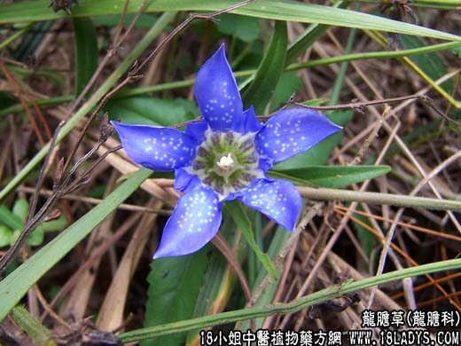

【中药概述】
龙胆草为龙胆科草本植物条叶龙胆或坚龙胆的根及根茎。苦、寒。归肝、胆经。
1．清热燥湿：用于湿热黄疸、阴痒阴肿、小便频数、带下、湿疹，清除下焦湿热等，常配黄柏，泽泻，石苇，扁蓄，木通，苦参，竹叶，茯苓等。
2．清肝利胆：用于清泻肝胆火热，如（和剂局方<龙胆泻肝汤>）；肝火上炎之目赤肿痛者，如（龙胆草散）。
3．泻火定惊：用于肝经热盛生风之高热、惊风、手足抽搐，如<凉惊丸>。
【药效鉴别】
龙胆草专泻肝胆实火，善清下焦湿热。“龙胆为胃家正药，——凡胃热气逆，胃汁短少，不能食者，服之可以开胃进食”。本品对肝胆火盛生风之证，因其清泻肝胆实火，可间接收
到息风之效。
【临证应用】
龙胆草配夏枯草 板蓝根 金钱草，治急性传染性肝炎。
【应用与配伍】
1．用于阴肿阴痒，带下湿疹，黄疽尿赤。本品大苦大寒，清热燥湿，尤善清下焦湿热。用治湿热下注，阴肿明痒，女子带下黄稠，男子阴囊肿痛，湿疹痞痒等，常配黄柏、苦参、苍术等药；
用治肝胆湿热，黄疽、尿赤，可与茵陈、桅子、黄相等同用。
2．用于肝火头痛、目赤耳聋、胁痛口苦。本品苦寒沉降，能泻肝胆实火，如龙胆泻肝汤。
3．用于肝经热盛，热极生风所致的高热惊厥、手足抽搐。本品能清泻肝胆实火，多与牛黄、钩藤、黄连等同用，能协奏清肝息风的作用，如凉惊丸。若小儿惊痫配白芍、获神、麦冬等清心安
神之品同用。
此外，用于热毒壅滞之口舌生疮，咽喉肿痛，用龙胆草也取其清热泻火之功。现代还用治肝阳上亢之高血压病。
【药理作用】
1、抗菌：煎剂用试管稀释法，1:16～1:4对绿脓杆菌、变形杆菌、痢疾杆菌及金黄色葡萄球菌等有不同程度的抑制作用。
2、抗真菌：水浸剂用试管稀释法，1:4对石膏样毛癣菌及星形奴卡菌有抑制作用。
3、除黄疸：龙胆注射液25g／kg皮下注射对a-萘异硫氰酸所致小鼠实验性黄疸模型（高胆红素血症和胆汁郁积），可明显地降低血清胆红素含量。
4、其他作用：本品含龙胆苦甙等，味苦，口服刺激味觉感受器，能反射性的促进胃液分泌。龙胆水提物对氯化苦所致小鼠迟发型变态反应有抑制作用。
【化学成分】
含龙胆苦甙、龙胆碱及龙胆三糖。尚含微量的当药甙和苦龙胆酯甙。开花期和果期的地上部分含龙胆苦甙。
【用量用法】
5——15g，水煎服。或入丸、散剂。
【使用注意】
极易伤脾胃。心气虚、血虚、脾胃虚，无湿热、实火者忌。
【附】
酒龙胆草：微苦，寒。归肝、胆经。能清泻肝胆实火，治因肝胆实火所致的头痛、目赤肿痛、胸胁疼痛及耳鸣肿痛等，如（龙胆泻肝汤）。